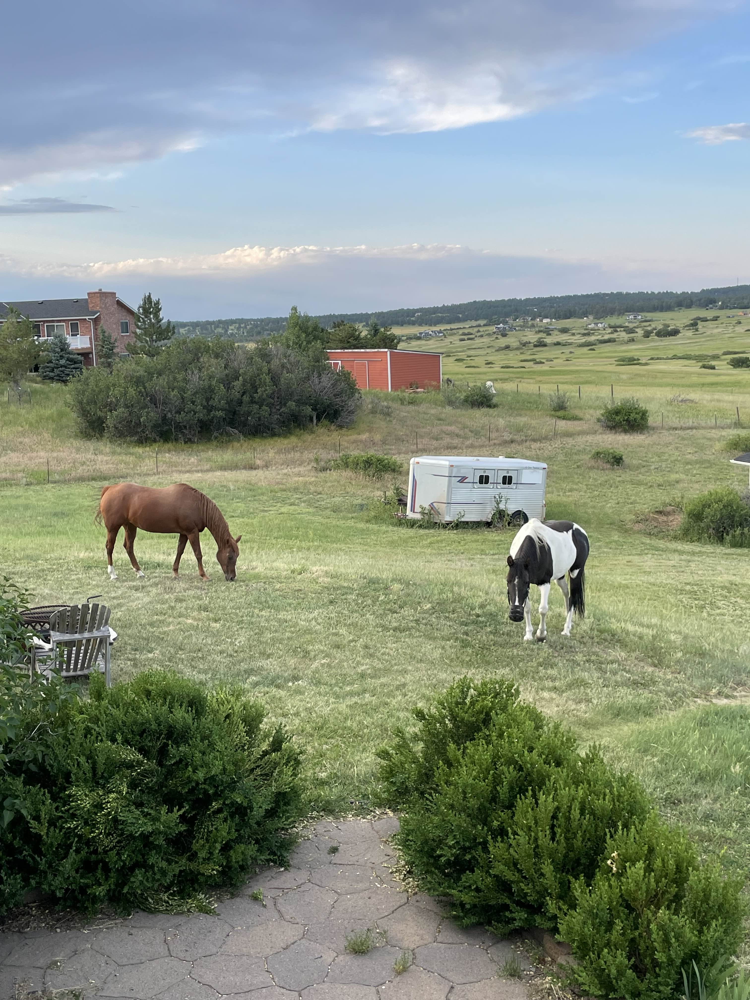
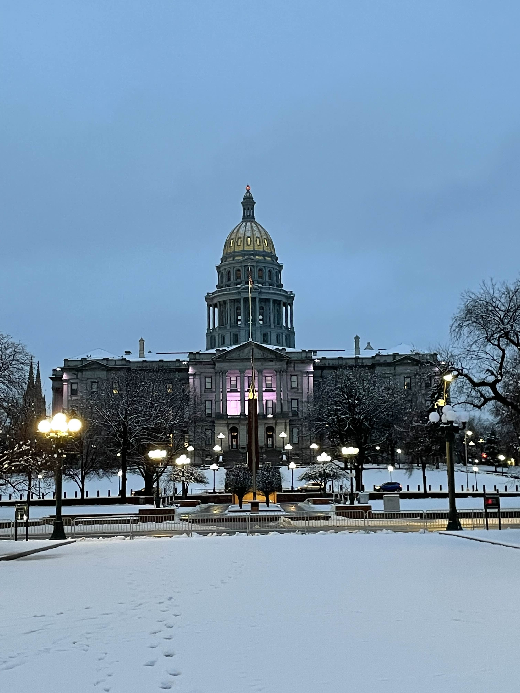

This is my dog, Murphy! He's a 6 year old mini austrailian shepherd.

This is Ernie, my childhood dog who passed away recently. He lived to the ripe old age of 16, and was a very good boy.

These are my horses! The left one is named Bar-J, and the right one is named Maddie.

I took this photo on a camping trip in the rocky mountains. The yellow spots are apsen trees, which turn a beautiful golden color in the fall.

I found this cool caterpillar on another camping trip. The 'fur' is actually a bunch of toxic spines, so don't pet it!

This is a photo I took of the state capitol, it was so cold that day that no one else was outside.